Garden TransformationsComplete redesigns from groundwork to finishing details

Patios & PavingModern porcelain and paved outdoor living spaces
Lawns & TurfFresh lawns integrated with paving and planting areas
Walls, Steps & LevelsStructured garden layouts with defined levels and edges
BESPOKE GARDEN DESIGN
Built around the property. Finished around the details.
Elm Bespoke Garden Designs creates structured, contemporary gardens with a strong focus on layout, paving, levels, walls, steps and usable lawn areas.
Request a quote →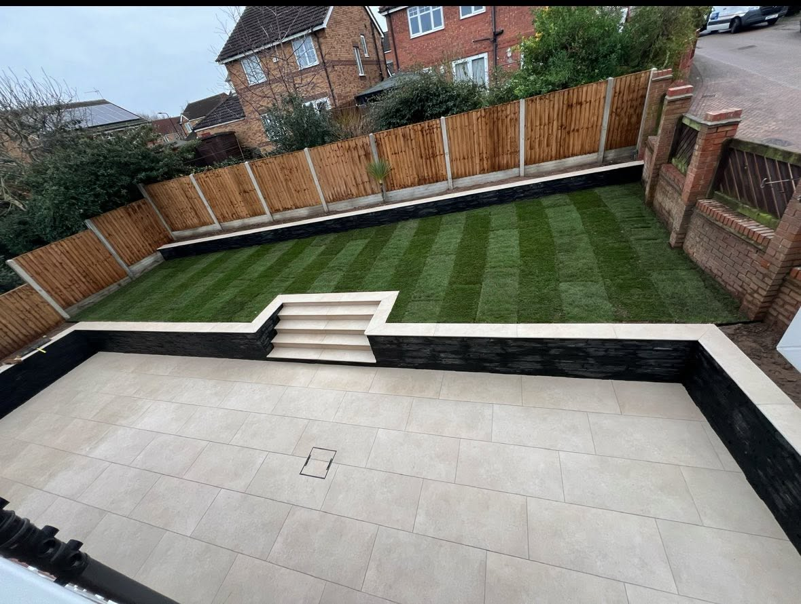
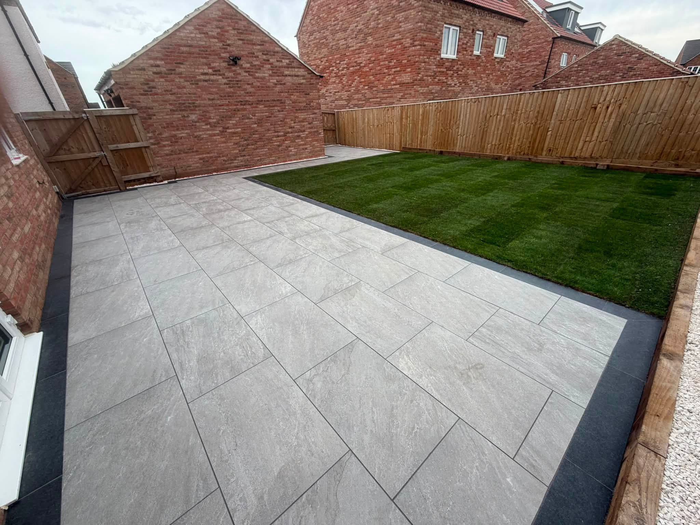
PATIOS & OUTDOOR LIVING
Clean lines and premium finishes.
The project photos show extensive use of large-format paving, contrasting borders, steps and retaining walls to create practical outdoor areas with a high-end finish.
Discuss your project →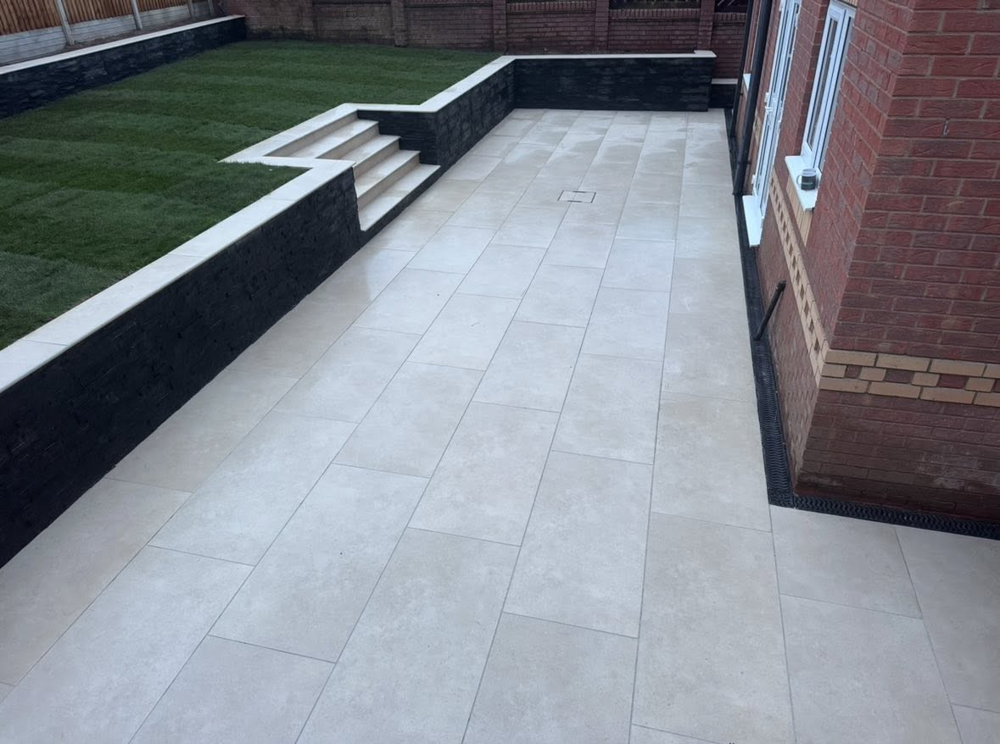
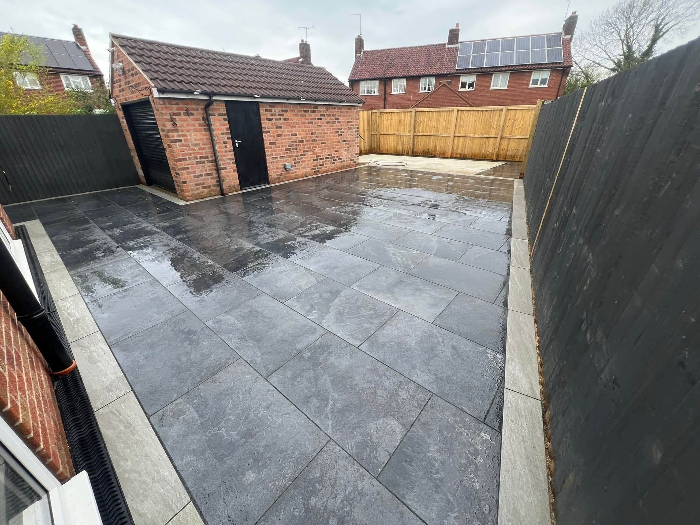
RECENT WORK
Finished gardens that speak for themselves.
A selection of supplied Elm Bespoke Garden Designs projects.
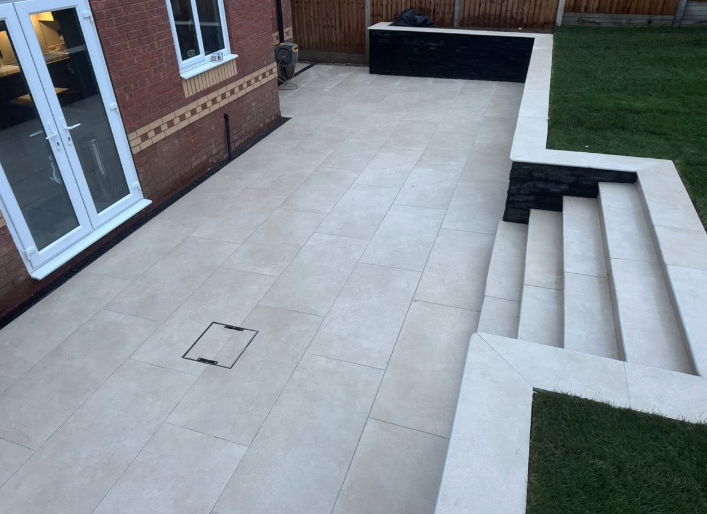
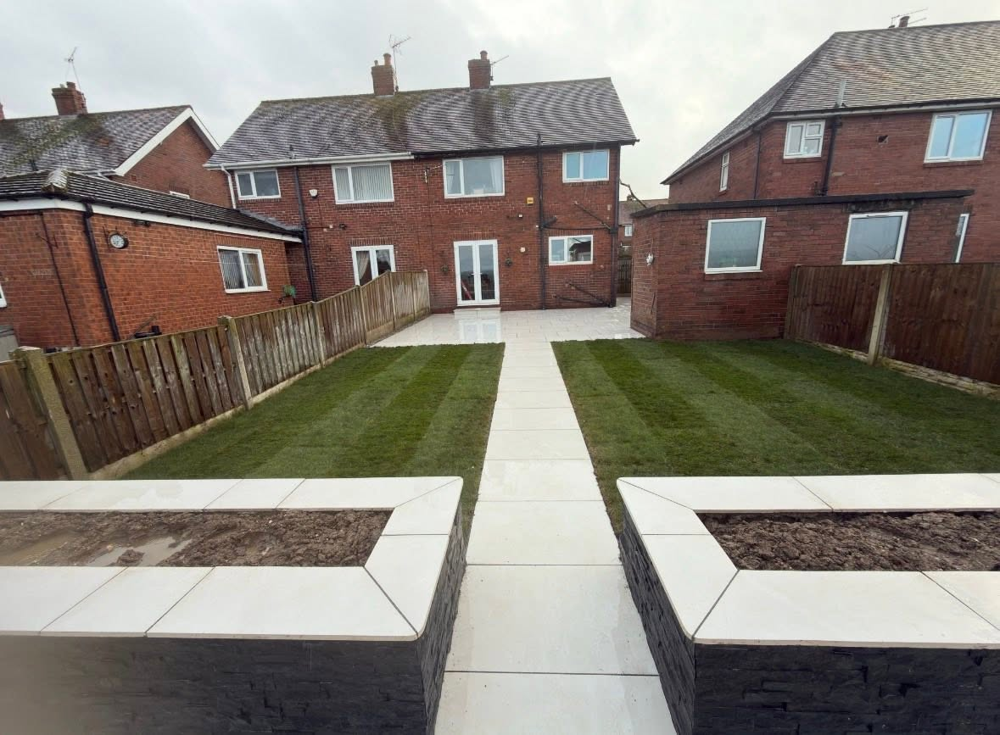
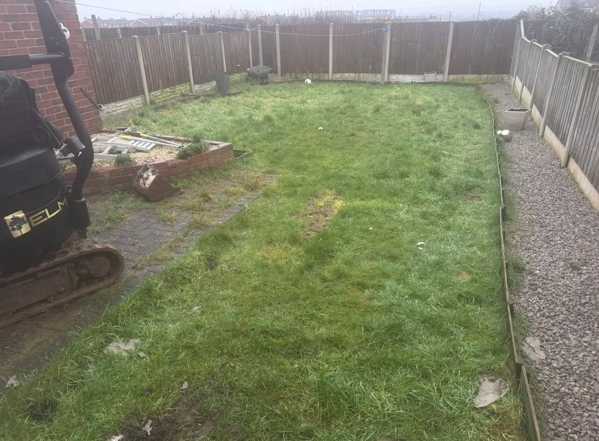
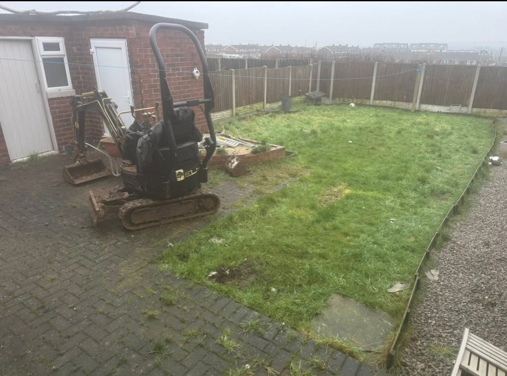
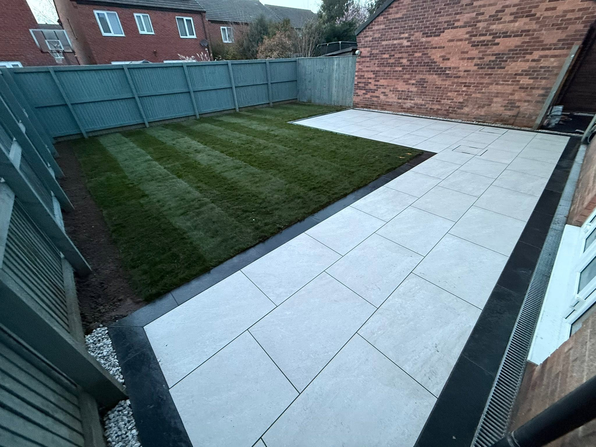
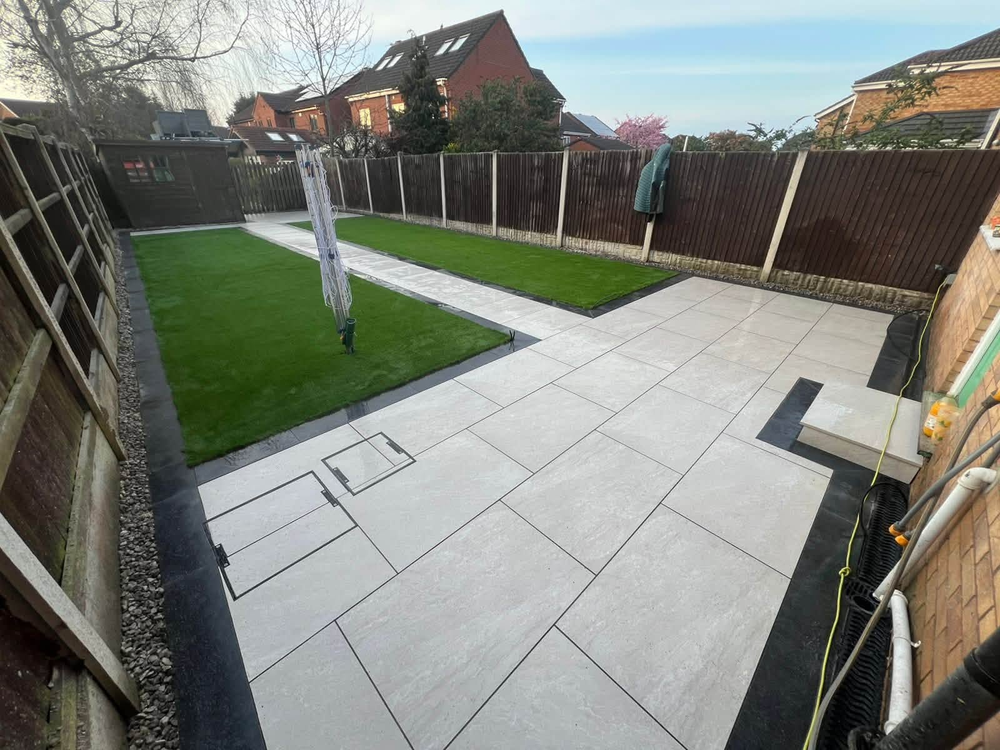
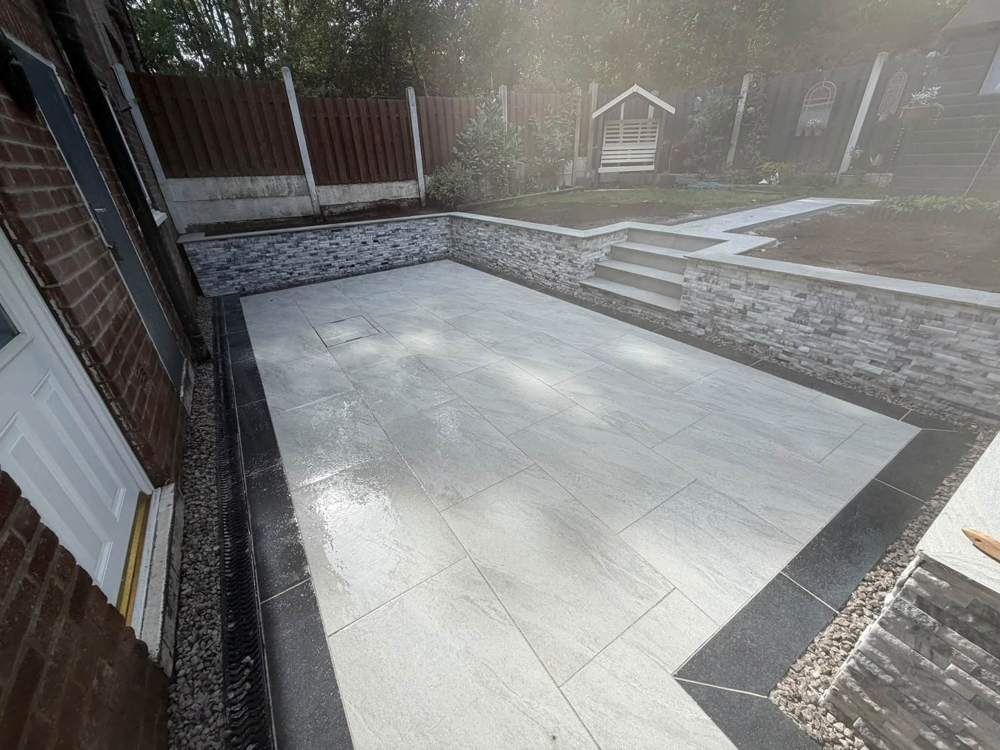
BEFORE & AFTER
A complete transformation from bare ground to finished garden.
The strongest projects start with the structure: levels, access, paving, drainage and how the garden will actually be used.
Plan your transformation →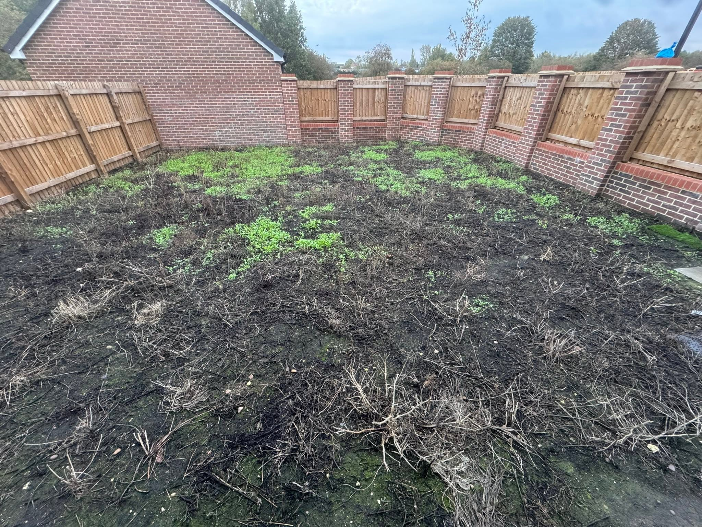
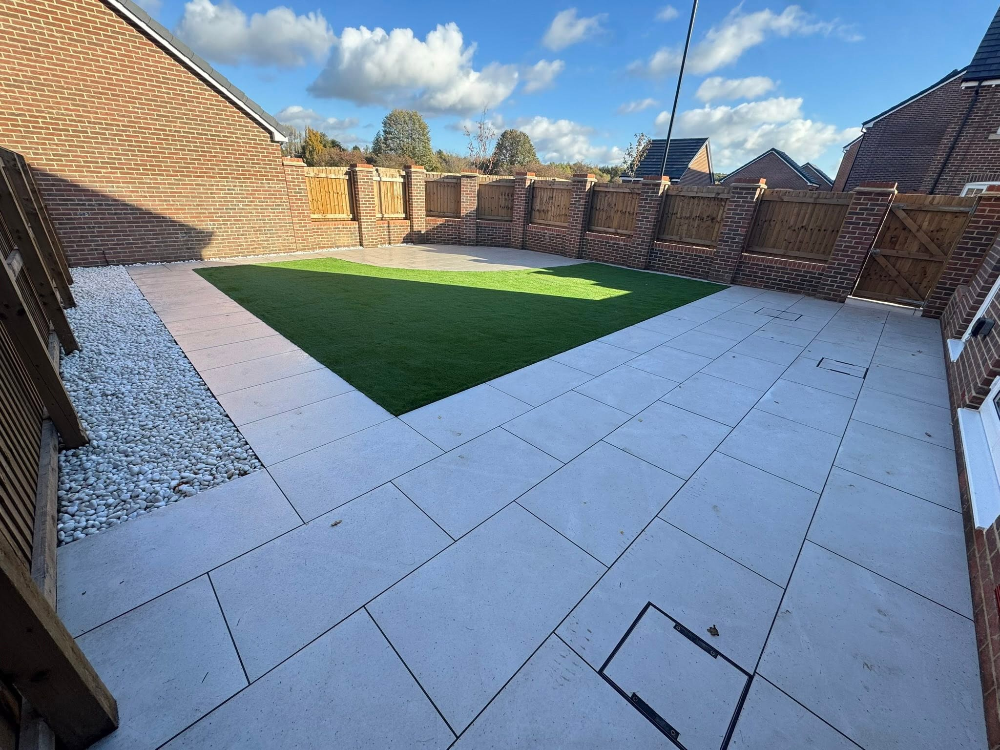
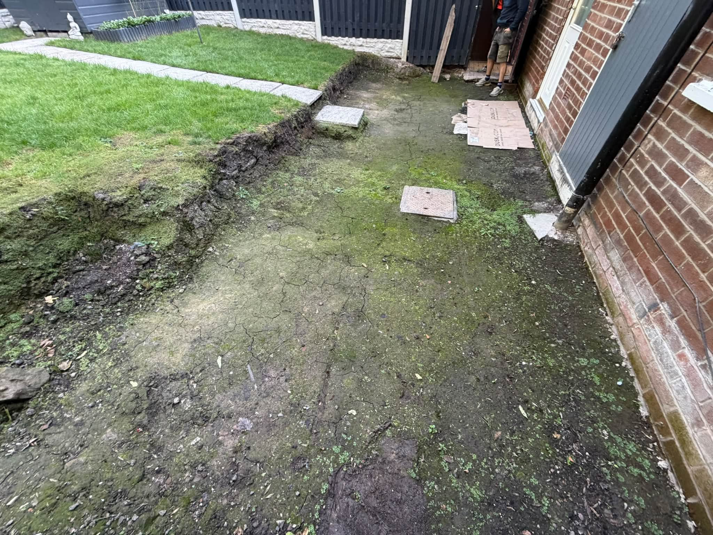
SOUTH YORKSHIRE LANDSCAPING
Designed to feel like part of the home.
Elm Bespoke Garden Designs is a South Yorkshire-based landscape gardening company. The supplied portfolio shows a consistent focus on modern paved areas, strong level changes, retaining walls and clean lawn integration.
01
Bespoke layouts
Projects shaped around each property rather than a one-size-fits-all design.
02
Hard landscaping
Patios, steps, walls and defined levels are central to the finished look.
03
Complete transformations
From preparation and groundwork through to the final lawn and paving details.
REQUEST A QUOTE
Tell Elm what you want to create.
Complete the form and it will open WhatsApp with your project details ready to send. This is a quote request, not a confirmed booking.
ELM BESPOKE GARDEN DESIGNS
Ready to transform your garden?
South Yorkshire · elmbespokegardendesigns@outlook.com